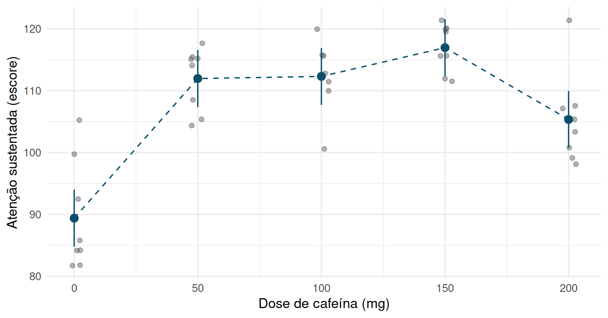
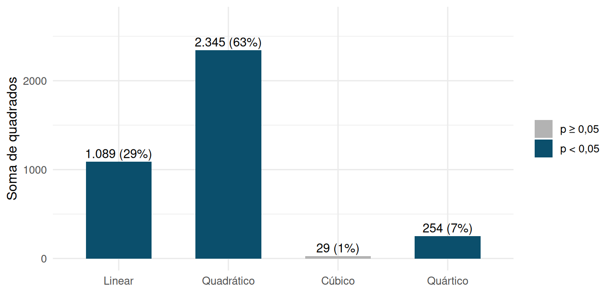
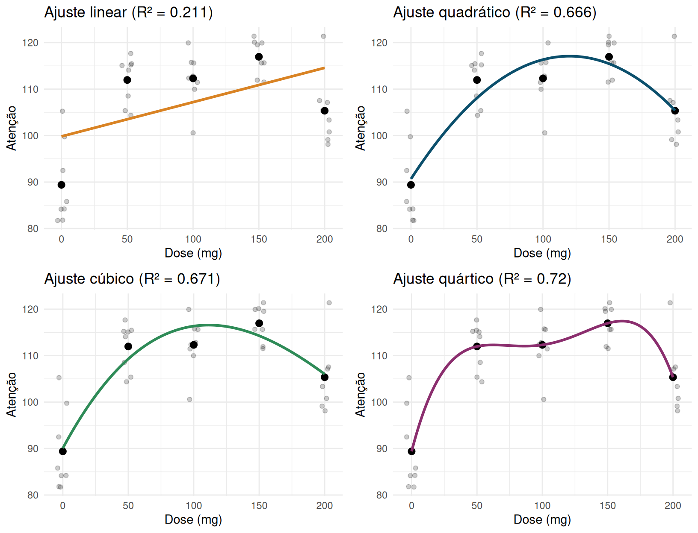
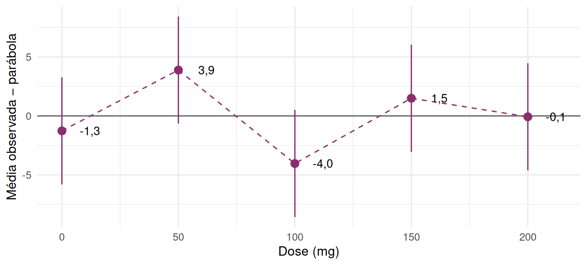
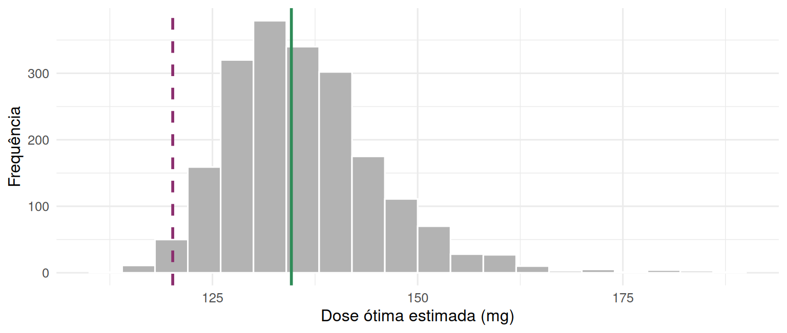

3.8 Polinômios ortogonais
Quando os níveis do fator são quantitativos e igualmente espaçados — como doses de um fármaco, ou concentrações de um insumo — comparar médias par a par desperdiça a informação de que os níveis têm uma ordem e uma métrica. Nesses casos, é mais informativo perguntar: a resposta cresce linearmente com o nível? Há curvatura (efeito quadrático)? A curva se inverte de novo (cúbico)? Polinômios ortogonais decompõem \(SQ_{\text{Trat}}\) exatamente nesses componentes.
set.seed(7)
dose_mg <- c(0, 50, 100, 150, 200)
n_dose <- 8
# covariável: nível basal de atenção (medido ANTES da dose), usado adiante na ANCOVA
basal <- rnorm(5 * n_dose, mean = 60, sd = 8)
dose_f <- factor(rep(dose_mg, each = n_dose))
# efeito verdadeiro tem forma de "U invertido": atenção sobe com a dose até um
# ponto e depois cai (excesso de estimulação) -- um caso clássico de curvatura
efeito_dose <- function(d) 20 + 0.35 * d - 0.0013 * d^2
cafeina <- tibble(
participante = 1:(5 * n_dose),
dose = dose_f,
basal = basal,
atencao_pos = 40 + 0.5 * basal + efeito_dose(as.numeric(as.character(dose_f))) +
rnorm(5 * n_dose, mean = 0, sd = 5)
)Um laboratório testa o efeito da cafeína (0, 50, 100, 150 e 200 mg) sobre o desempenho em um teste de atenção sustentada, aplicado 40 minutos após a ingestão. Quarenta participantes são sorteados em 5 grupos de 8 (UE = participante). Os níveis do fator — a dose — são quantitativos e igualmente espaçados em 50 mg, o cenário ideal para polinômios ortogonais. As perguntas do laboratório: a atenção depende da dose? Mais cafeína é sempre melhor? Existe uma dose ótima? Como os dados são simulados, conhecemos a curva verdadeira — uma parábola com pico em 0,35/(2 × 0,0013) ≈ 135 mg —, o que permitirá, ao final, avaliar o quanto a análise acertou.
A dose foi sorteada entre os participantes, e a atenção basal foi medida antes do sorteio. Por isso, quando a Seção 3.9 ajustar pela atenção basal, o ajuste vai ganhar precisão, não corrigir viés: o sorteio já garante que as doses não diferem, em média, na atenção basal.
3.8.1 Os dados
| Participante | 0 mg | 50 mg | 100 mg | 150 mg | 200 mg |
|---|---|---|---|---|---|
| 1 | 105.2 | 105.4 | 100.6 | 119.9 | 105.4 |
| 2 | 81.7 | 117.7 | 112.4 | 119.5 | 103.4 |
| 3 | 85.8 | 104.4 | 112.8 | 120.1 | 98.1 |
| 4 | 81.8 | 115.1 | 111.5 | 121.4 | 99.1 |
| 5 | 84.2 | 115.2 | 115.7 | 115.6 | 107.5 |
| 6 | 84.2 | 114.1 | 115.6 | 115.6 | 100.8 |
| 7 | 99.7 | 115.5 | 119.9 | 111.9 | 107.1 |
| 8 | 92.5 | 108.5 | 110.0 | 111.5 | 121.4 |
| Dose (mg) | n | Média | DP |
|---|---|---|---|
| 0 | 8 | 89.39 | 8.88 |
| 50 | 8 | 111.97 | 5.11 |
| 100 | 8 | 112.31 | 5.67 |
| 150 | 8 | 116.96 | 3.84 |
| 200 | 8 | 105.35 | 7.37 |

Figura 3.36: Escores individuais de atenção (cinza) e média por dose com IC de 95% calculado com o QME combinado (azul); a linha tracejada só liga as médias observadas, não é um modelo ajustado.
A média sobe muito de 0 para 50 mg (+22,6 pontos), fica num platô entre 50 e 150 mg e cai em 200 mg. O grupo de 0 mg é o mais disperso (desvio-padrão, DP, de 8,9), mas nenhum DP é mais que o dobro de outro, o que é compatível com a homocedasticidade. Agora o eixo horizontal é métrico: a pergunta natural já não é “que doses diferem?”, e sim “qual é a forma da curva dose-resposta?”.
A ANOVA global confirma o efeito da dose (\(F = 22{,}5\) em (4, 35) gl, \(p < 0{,}0001\)). Comparar as doses aos pares, porém, responde mal à pergunta:
emm_caf <- emmeans(mod_poly, ~ dose)
multcomp::cld(emm_caf, Letters = letters, adjust = "tukey") %>% as.data.frame() %>%
arrange(dose) %>% dplyr::select(dose, emmean, .group)## dose emmean .group
## 1 0 89.3932 a
## 2 50 111.9680 bc
## 3 100 112.3104 bc
## 4 150 116.9588 c
## 5 200 105.3486 bTukey compara dez pares e devolve letras sobrepostas: 0 mg difere de todas as outras doses; 150 e 200 mg diferem entre si; mas 50 e 100 mg ficam “iguais” às duas (letras “bc”) — exatamente o defeito do CLD discutido na seção anterior. Além disso, a análise par a par ignora que 50 mg está entre 0 e 100 mg: trataria do mesmo modo doses rotuladas como “A”, “B”, “C”. Os polinômios ortogonais usam essa ordem e essa métrica.
3.8.2 Esperança, variância e soma de quadrados
Para níveis quantitativos igualmente espaçados e \(n\) constante por grupo, existe uma tabela padrão de coeficientes ortogonais \(\lambda_i\) (Fisher & Yates, 1938) para cada grau do polinômio — linear, quadrático, cúbico etc. — com até \(t-1\) graus disponíveis para \(t\) níveis:
| Grau | 0 mg | 50 mg | 100 mg | 150 mg | 200 mg | \(\sum\lambda^2\) | Pergunta |
|---|---|---|---|---|---|---|---|
| Linear | -2 | -1 | 0 | 1 | 2 | 10 | a resposta sobe ou desce com a dose? |
| Quadrático | 2 | -1 | -2 | -1 | 2 | 14 | há curvatura (U ou U invertido)? |
| Cúbico | -1 | 2 | 0 | -2 | 1 | 10 | a curvatura muda de sentido? |
| Quártico | 1 | -4 | 6 | -4 | 1 | 70 | ondulação de 4ª ordem |
Cada linha da tabela é um contraste com \(\sum_i \lambda_i = 0\), e quaisquer duas linhas são ortogonais entre si (\(\sum_i \lambda_i \lambda_i' = 0\)) — são exatamente o caso particular de contrastes ortogonais da Seção 3.6, com coeficientes escolhidos para isolar tendência polinomial em vez de comparações ad hoc entre grupos. Para o componente de grau \(k\), com coeficientes \(\lambda_{ki}\):
\[\hat L_k = \sum_{i=1}^t \lambda_{ki} \bar y_{i\cdot}, \qquad \mathrm{Var}(\hat L_k) = \frac{\sigma^2}{n}\sum_{i=1}^t \lambda_{ki}^2, \qquad SQ_k = \frac{n\,\hat L_k^{\,2}}{\sum_{i=1}^t \lambda_{ki}^2},\]
cada um com 1 grau de liberdade, e \(SQ_{\text{Trat}} = \sum_{k=1}^{t-1} SQ_k\) exatamente como na
partição por contrastes ortogonais gerais. Na prática, o R constrói esses coeficientes
automaticamente (função contr.poly()), reescalados para ter norma 1.
3.8.3 De onde vêm os coeficientes
Os números da tabela não são arbitrários. Codifique a dose \(d\) em \(x = (d-\bar d)/\Delta \in \{-2,-1,0,1,2\}\), com \(\Delta = 50\) mg o espaçamento, e ortogonalize os monômios \(1, x, x^2, x^3, x^4\) pelo processo de Gram-Schmidt, usando como produto interno a soma sobre os cinco pontos. O resultado são os polinômios
\[P_1(x) = x, \qquad P_2(x) = x^2 - 2, \qquad P_3(x) = \tfrac{5}{6}\big(x^3 - \tfrac{17}{5}x\big), \qquad P_4(x) = \tfrac{35}{12}\big(x^4 - \tfrac{31}{7}x^2 + \tfrac{72}{35}\big),\]
e os coeficientes tabelados são os valores de \(P_k\) nos cinco pontos. Por exemplo, \(P_2(-2) = 2\), \(P_2(-1) = -1\), \(P_2(0) = -2\), \(P_2(1) = -1\), \(P_2(2) = 2\) — a linha do quadrático. O termo \(-2\) em \(P_2\) é a projeção de \(x^2\) sobre a constante (a média de \(x^2\) nos cinco pontos), que Gram-Schmidt remove; as constantes \(\tfrac56\) e \(\tfrac{35}{12}\) só tornam os valores inteiros.
A consequência prática é importante: o ajuste por polinômios ortogonais é uma regressão polinomial na dose, escrita numa base em que os termos não se confundem. Com \(\hat b_k = \hat L_k/\sum_i\lambda_{ki}^2\), a curva ajustada de grau 2 é \(\hat y(x) = \bar y_{\cdot\cdot} + \hat b_1 P_1(x) + \hat b_2 P_2(x)\), e basta substituir \(x = (d-100)/50\) para voltar à escala de mg (Seção 3.8.8).
3.8.4 A matriz de polinômios ortogonais como parte de \(\mathbf X\)
Os coeficientes tabulados acima não são um truque à parte: são, literalmente, colunas adicionais da matriz de delineamento \(\mathbf X\). Na parametrização por polinômios ortogonais, o modelo do DCA para a cafeína se escreve
\[\mathbf Y = \mathbf X_{\text{poly}}\boldsymbol\beta + \boldsymbol\varepsilon, \qquad \mathbf X_{\text{poly}} = \big[\ \mathbf 1 \ \big|\ \boldsymbol\lambda_L \ \big|\ \boldsymbol\lambda_Q \ \big|\ \boldsymbol\lambda_C \ \big|\ \boldsymbol\lambda_{4}\ \big], \qquad \boldsymbol\beta = (\mu,\ \beta_L,\ \beta_Q,\ \beta_C,\ \beta_4)',\]
em que cada \(\boldsymbol\lambda_k\) (\(N\times 1\)) repete o coeficiente tabulado do grau \(k\) tantas
vezes quanto o número de réplicas na respectiva dose — exatamente as colunas que contr.poly(5)
gera. Como as cinco colunas de \(\mathbf X_{\text{poly}}\) são mutuamente ortogonais por construção
(o intercepto \(\mathbf 1\) incluído: \(\mathbf 1'\boldsymbol\lambda_k=0\) para todo \(k\)),
\(\mathbf X_{\text{poly}}'\mathbf X_{\text{poly}}\) é diagonal — a situação mais simples possível
para mínimos quadrados: cada \(\hat\beta_k\) se estima independentemente dos demais, sem
covariância entre as estimativas, e \(SQ_k\) é exatamente a forma quadrática de posto 1 da Seção
3.6, com \(\boldsymbol\lambda = \boldsymbol\lambda_k\). Essa é a razão algébrica — não
apenas um resultado feliz — de \(SQ_{\text{Trat}}\) se decompor sem sobra em \(t-1\) somas de
quadrados de 1 grau de liberdade cada.
contrasts(cafeina$dose) <- contr.poly(5)
X_poly <- model.matrix(atencao_pos ~ dose, data = cafeina) # 5 colunas: 1, L, Q, C, quártico
round(crossprod(X_poly), 3) # X'X_poly -- diagonal, exatamente como o argumento algébrico prevê## (Intercept) dose.L dose.Q dose.C dose^4
## (Intercept) 40 0 0 0 0
## dose.L 0 8 0 0 0
## dose.Q 0 0 8 0 0
## dose.C 0 0 0 8 0
## dose^4 0 0 0 0 83.8.5 Os componentes calculados à mão
A Tabela 3.26 faz a conta dos quatro componentes a partir das cinco médias.
| Grau | \(\lambda\) (0, 50, 100, 150, 200 mg) | \(\hat L_k = \sum\lambda\bar y\) | \(\sum\lambda^2\) | \(SQ_k = 8\hat L_k^2/\sum\lambda^2\) | F | p-valor |
|---|---|---|---|---|---|---|
| Linear | -2, -1, 0, 1, 2 | 36,90 | 10 | 1.089,4 | 26,42 | < 0,0001 |
| Quadrático | 2, -1, -2, -1, 2 | -64,06 | 14 | 2.345,3 | 56,87 | < 0,0001 |
| Cúbico | -1, 2, 0, -2, 1 | 5,97 | 10 | 28,5 | 0,69 | 0,4110 |
| Quártico | 1, -4, 6, -4, 1 | -47,10 | 70 | 253,6 | 6,15 | 0,0181 |
As médias por dose são \(\bar y = (89{,}39;\ 111{,}97;\ 112{,}31;\ 116{,}96;\ 105{,}35)\) e \(QME = 41{,}24\), com 35 gl. Para o componente linear, por exemplo, \(\hat L_L = -2(89{,}39) - (111{,}97) + 0 + (116{,}96) + 2(105{,}35) = 36{,}90\) e \(SQ_L = 8 \times 36{,}90^2/10 = 1.089{,}4\). A soma das quatro somas de quadrados é 3.716,8, que é \(SQ_{\text{Trat}}\).
contrasts(cafeina$dose) <- contr.poly(5) # coeficientes ortogonais, dose como fator
mod_poly <- aov(atencao_pos ~ dose, data = cafeina)
summary(mod_poly, split = list(dose = list(Linear = 1, Quadratic = 2,
Cubic = 3, Quartic = 4)))## Df Sum Sq Mean Sq F value Pr(>F)
## dose 4 3717 929.2 22.534 2.82e-09 ***
## dose: Linear 1 1089 1089.4 26.419 1.05e-05 ***
## dose: Quadratic 1 2345 2345.3 56.874 7.75e-09 ***
## dose: Cubic 1 29 28.5 0.692 0.4110
## dose: Quartic 1 254 253.6 6.149 0.0181 *
## Residuals 35 1443 41.2
## ---
## Signif. codes: 0 '***' 0.001 '**' 0.01 '*' 0.05 '.' 0.1 ' ' 1A saída reproduz a conta à mão linha a linha. Os termos linear e quadrático são muito significativos; o cúbico não; e o quártico também é significativo (\(p \approx 0{,}018\)), um resultado que precisa de interpretação cuidadosa (Seção 3.8.7). A Figura 3.37 mostra o peso de cada grau.

Figura 3.37: Partição de a SQ de tratamentos da cafeína em componentes linear, quadrático, cúbico e quártico; barras escuras indicam componentes com p < 0,05, e o rótulo dá a SQ e sua porcentagem de a SQ de tratamentos.
O quadrático sozinho responde por 63% de \(SQ_{\text{Trat}}\), e linear e quadrático juntos por 92%; o quártico, embora significativo, explica 7%. A forma dominante é um “U invertido” que sobe com a dose.
Como no experimento do algodão de Montgomery — um DCA clássico em que a resistência de um fio têxtil é medida sob cinco concentrações de algodão igualmente espaçadas —, o jeito mais direto de “ver” qual grau de polinômio é necessário é ajustar os quatro graus possíveis lado a lado e comparar visualmente o quanto cada um se aproxima das cinco médias observadas:

Figura 3.38: Ajustes polinomiais de grau 1 a 4 da atenção em função da dose: pontos cinza são os participantes, pontos pretos as médias por dose, e a curva colorida o polinômio ajustado; o título de cada painel traz o R² do ajuste.
c(R2_linear = summary(mod_lin_num)$r.squared, R2_quadratico = summary(mod_quad_num)$r.squared,
R2_cubico = summary(mod_cub_num)$r.squared, R2_quartico = summary(mod_quart_num)$r.squared)## R2_linear R2_quadratico R2_cubico R2_quartico
## 0.2111213 0.6656282 0.6711609 0.7203006O painel deixa a progressão visível. A reta (canto superior esquerdo) erra o padrão por completo: fica abaixo das médias no platô e acima delas em 0 mg, com \(R^2 \approx 0{,}21\) apenas. A parábola (canto superior direito) já captura o essencial — sobe até um pico e desce —, saltando para \(R^2 \approx 0{,}67\). O cúbico quase não acrescenta, e o quártico passa exatamente pelas cinco médias: com cinco parâmetros para cinco pontos, ele não é um modelo da curva, é uma reprodução das médias, e seu \(R^2\) (0,72) é o máximo atingível com a dose tratada como fator — a diferença para 1 é o erro puro, a variação entre participantes que receberam a mesma dose. O grau necessário é o menor que já descreve a curva de forma plausível, e o painel sugere a parábola; a seção seguinte mostra por que os testes formais, aqui, complicam um pouco essa conclusão.
3.8.6 Falta de ajuste: a parábola basta?
Com a dose tratada como fator (cinco médias livres), o modelo do DCA é o mais flexível possível para estes dados. Um polinômio de grau \(g < t-1\) é um modelo encaixado nele, e a diferença entre os dois é a falta de ajuste:
\[SQ_{\text{falta}} = SQ_{\text{Trat}} - \sum_{k=1}^{g} SQ_k = \sum_{k=g+1}^{t-1} SQ_k, \qquad F_{\text{falta}} = \frac{SQ_{\text{falta}}/(t-1-g)}{QME} \sim F_{t-1-g,\;N-t}.\]
O denominador é o erro puro do DCA — a variação entre réplicas da mesma dose —, o que só existe porque o experimento tem repetição em cada nível: sem réplicas, não haveria como distinguir “o polinômio não descreve as médias” de “as médias são ruidosas”. Em termos do Capítulo 2, é mais uma soma de quadrados extra, \(\mathbf Y'(\mathbf P_{\text{fator}} - \mathbf P_{\text{grau } g})\mathbf Y\).
## Analysis of Variance Table
##
## Model 1: atencao_pos ~ dose_num + I(dose_num^2)
## Model 2: atencao_pos ~ dose
## Res.Df RSS Df Sum of Sq F Pr(>F)
## 1 37 1725.4
## 2 35 1443.2 2 282.11 3.4207 0.04396 *
## ---
## Signif. codes: 0 '***' 0.001 '**' 0.01 '*' 0.05 '.' 0.1 ' ' 1Para a parábola, \(SQ_{\text{falta}} = SQ_C + SQ_4 = 28{,}5 + 253{,}6 = 282{,}1\) com 2 gl, \(F = 3{,}42\) e \(p = 0{,}0440\). Formalmente, ao nível de 5%, rejeita-se que a parábola descreva as cinco médias — é a mesma informação do quártico significativo, dita de outro modo. A Figura 3.39 mostra onde ela erra.

Figura 3.39: Diferença entre a média observada em cada dose e o valor da parábola ajustada, com barras de mais ou menos dois erros-padrão de uma média (raiz de QME/8).
Os desvios fazem um zigue-zague de sinais \(+,-,+\) em 50, 100 e 150 mg — exatamente o desenho do coeficiente quártico \((1,-4,6,-4,1)\) com o sinal trocado (o \(\hat L_4\) é negativo). A parábola subestima o platô em 50 mg e o superestima em 100 mg, por cerca de 4 pontos, menos que o desvio-padrão de um participante (\(\sqrt{QME} \approx 6{,}4\)).
3.8.7 O quártico significativo: efeito real ou acaso?
Aqui temos uma vantagem rara: sabemos que a curva verdadeira é uma parábola, de modo que o quártico significativo é, com certeza, um falso positivo. Ele era previsível? Repetimos o mesmo experimento 2.000 vezes, a partir do modelo verdadeiro, e registramos com que frequência os termos cúbico e quártico — ambos nulos na verdade — saem significativos.
set.seed(321)
x_d <- rep(dose_mg, each = 8)
pq <- replicate(2000, {
yy <- 40 + 0.5 * rnorm(40, 60, 8) + efeito_dose(x_d) + rnorm(40, 0, 5)
f <- factor(x_d); contrasts(f) <- contr.poly(5)
summary(aov(yy ~ f), split = list(f = list(L = 1, Q = 2, C = 3, Q4 = 4)))[[1]][["Pr(>F)"]][4:5]
})
c(cubico = mean(pq[1, ] < 0.05), quartico = mean(pq[2, ] < 0.05),
algum_dos_dois = mean(apply(pq < 0.05, 2, any)))## cubico quartico algum_dos_dois
## 0.0525 0.0520 0.1030Cada um dos dois termos nulos sai significativo em cerca de 5% das repetições, como deve ser, e pelo menos um deles em 10,3% — testar os \(t-1 = 4\) graus é, também, uma família de testes, e o problema de multiplicidade da seção anterior reaparece aqui. Na prática, sem conhecer a verdade, três critérios ajudam a decidir:
- Plausibilidade: não há mecanismo fisiológico conhecido para uma ondulação de quarta ordem na resposta à cafeína, ao passo que o “U invertido” (lei de Yerkes-Dodson) é bem documentado.
- Parcimônia e tamanho: os desvios em relação à parábola são de cerca de 4 pontos e explicam 7% da variação entre doses.
- Replicação: um termo de alta ordem que é real reaparece num novo experimento; um acidental, não. Um quártico isolado, sem cúbico e sem justificativa, é o candidato típico a acaso.
A conclusão defensável é adotar a parábola para descrever e interpretar a curva, reportando a falta de ajuste em vez de escondê-la.
3.8.8 De volta à escala da dose: a equação e a dose ótima
Com \(x = (d-100)/50\), \(\hat b_1 = \hat L_L/10\) e \(\hat b_2 = \hat L_Q/14\), a parábola na base ortogonal é
## ybar b1 b2
## 107.195803 3.690166 -4.576002## (Intercept) dose_num I(dose_num^2)
## 90.663466965 0.439883451 -0.001830401\[\hat y = 107{,}20 + 3{,}690\,x -4{,}576\,(x^2-2), \qquad x = \frac{d-100}{50}.\]
Expandindo, o coeficiente de \(d^2\) é \(-4{,}576/2500 = -0{,}001830\), o mesmo
do lm ajustado diretamente na dose: os polinômios ortogonais não são outro modelo, são a mesma
regressão, numa base em que os termos não se confundem (e em que, por isso, retirar o termo
quadrático não altera a estimativa do linear, o que não acontece na base \(d, d^2\)).
A pergunta “existe uma dose ótima?” se responde pelo vértice da parábola, \(d^\star = -\hat\beta_1/(2\hat\beta_2)\), uma função não linear dos coeficientes. Seu erro-padrão sai do método delta, \(\mathrm{Var}(\hat d^\star) \approx \nabla g'\,\widehat{\mathrm{Cov}}(\hat{\boldsymbol\beta})\,\nabla g\), com \(\nabla g = \big(0,\ -1/(2\hat\beta_2),\ \hat\beta_1/(2\hat\beta_2^2)\big)'\):
b <- coef(mod_quad_num); V <- vcov(mod_quad_num)
d_ot <- unname(-b[2] / (2 * b[3]))
grad <- c(0, -1 / (2 * b[3]), b[2] / (2 * b[3]^2))
ep_ot <- sqrt(drop(t(grad) %*% V %*% grad))
c(dose_otima = d_ot, ep = ep_ot, li = d_ot - qt(0.975, 37) * ep_ot, ls = d_ot + qt(0.975, 37) * ep_ot)## dose_otima ep li ls
## 120.160429 5.047698 109.932822 130.388037A dose que maximiza a atenção estimada é de cerca de 120 mg (IC de 95% pelo método delta: 110 a 130 mg), com atenção prevista de 117,1 pontos. A dose ótima verdadeira, 135 mg, fica fora desse intervalo. A Figura 3.40 explica o que aconteceu.
set.seed(123)
vs <- replicate(2000, {
yy <- 40 + 0.5 * rnorm(40, 60, 8) + efeito_dose(x_d) + rnorm(40, 0, 5)
bb <- coef(lm(yy ~ x_d + I(x_d^2))); -bb[2] / (2 * bb[3])
})
ggplot(tibble(v = vs[vs > 50 & vs < 250]), aes(v)) +
geom_histogram(binwidth = 4, fill = "grey70", color = "white") +
geom_vline(xintercept = 0.35 / (2 * 0.0013), color = "#2e8b57", linewidth = 1) +
geom_vline(xintercept = d_ot, color = "#8b2e6e", linewidth = 1, linetype = "dashed") +
labs(x = "Dose ótima estimada (mg)", y = "Frequência") + theme_minimal(base_size = 12)
Figura 3.40: Distribuição da dose ótima estimada (vértice da parábola) em 2.000 repetições simuladas do experimento a partir do modelo verdadeiro; a linha verde contínua marca a dose ótima verdadeira (135 mg) e a roxa tracejada, a estimativa obtida com os dados observados.
Três observações. Primeiro, um intervalo de 95% erra 5% das vezes, e esta amostra está numa cauda: em apenas 1,5% das repetições a estimativa saiu tão baixa. Segundo, o motivo é identificável: esta amostra superestimou a curvatura (\(\hat\beta_2 = -0{,}00183\) contra \(-0{,}0013\) verdadeiro) — o mesmo platô “achatado” entre 50 e 150 mg que gerou o quártico — e o erro-padrão do método delta, proporcional a \(1/|\hat\beta_2|\), herda esse otimismo; a distribuição do vértice é, além disso, assimétrica, o que o método delta ignora. Terceiro, e mais importante para a decisão: perto do pico a curva é achatada. Na curva verdadeira, 120 e 135 mg diferem em apenas 0,28 ponto de atenção. A dose ótima é difícil de localizar justamente porque errar o pico custa pouco.
3.8.9 Doses não igualmente espaçadas e a ordem dos níveis
Os coeficientes tabelados valem apenas para níveis igualmente espaçados. Se as doses fossem 0, 50, 100, 200 e 400 mg, os números \((-2,-1,0,1,2)\) testariam uma tendência no posto da dose, não na dose; os coeficientes certos dependem dos valores dos níveis:
P_certo <- contr.poly(5, scores = c(0, 50, 100, 200, 400)) # ortogonais NAS DOSES REAIS
round(P_certo, 3)## .L .Q .C ^4
## [1,] -0.474 0.546 -0.470 0.237
## [2,] -0.316 0.035 0.422 -0.721
## [3,] -0.158 -0.335 0.514 0.631
## [4,] 0.158 -0.652 -0.570 -0.158
## [5,] 0.791 0.405 0.104 0.011lin_tab <- c(-2, -1, 0, 1, 2) # "linear" da tabela
round(c(cor_com_linear_real = cor(lin_tab, P_certo[, 1]),
cor_com_quadratico_real = cor(lin_tab, P_certo[, 2])), 2)## cor_com_linear_real cor_com_quadratico_real
## 0.95 -0.31O “linear” tabelado não é ortogonal ao quadrático verdadeiro (correlação de
-0,31): parte da curvatura vaza para o termo linear, e as somas de quadrados
deixam de particionar \(SQ_{\text{Trat}}\) com significado. O caminho correto é contr.poly(k, scores = doses)
ou, equivalentemente, lm(y ~ poly(dose_num, 2)) sobre a variável numérica.
Uma segunda armadilha, mais traiçoeira porque não gera mensagem de erro, é a ordem dos níveis do
fator. contr.poly() atribui os coeficientes na ordem de levels(), e se a dose for lida como
texto o R a ordena alfabeticamente:
dose_txt <- factor(as.character(cafeina$dose))
levels(dose_txt) # "0" "100" "150" "200" "50": 50 mg no fim!## [1] "0" "100" "150" "200" "50"contrasts(dose_txt) <- contr.poly(5)
summary(aov(cafeina$atencao_pos ~ dose_txt),
split = list(dose_txt = list(L = 1, Q = 2, C = 3, Q4 = 4)))## Df Sum Sq Mean Sq F value Pr(>F)
## dose_txt 4 3717 929.2 22.534 2.82e-09 ***
## dose_txt: L 1 1167 1166.6 28.292 6.11e-06 ***
## dose_txt: Q 1 1364 1363.9 33.075 1.64e-06 ***
## dose_txt: C 1 1066 1065.7 25.844 1.25e-05 ***
## dose_txt: Q4 1 121 120.5 2.923 0.0962 .
## Residuals 35 1443 41.2
## ---
## Signif. codes: 0 '***' 0.001 '**' 0.01 '*' 0.05 '.' 0.1 ' ' 1A \(SQ_{\text{Trat}}\) total é a mesma (o fator é o mesmo), mas a partição perde todo o sentido: o
“linear” passa a medir outra coisa, e o cúbico, que antes não era significativo, passa a ser.
Antes de usar polinômios ortogonais, confira sempre levels() — ou construa o fator com
factor(dose, levels = c(0, 50, 100, 150, 200)).
3.8.10 O que os dados de cafeína respondem
- A atenção depende da dose? Sim (\(F_{4,35} = 22{,}5\)).
- Mais cafeína é sempre melhor? Não: o termo linear é positivo, mas o quadrático, negativo e responsável por 63% da variação entre doses, mostra que a curva sobe e depois desce.
- Existe uma dose ótima? A parábola estima cerca de 120 mg, mas o pico é mal determinado; o que os dados sustentam com segurança é um platô entre 50 e 150 mg.
- 200 mg é pior que 150 mg? Sim: queda de 11,6 pontos (Tukey, p ≈ 0,008), coerente com excesso de estimulação.
- Vale a pena passar de 50 mg? 150 mg rende só 5,0 pontos a mais que 50 mg, diferença não significativa: a menor dose do platô já entrega quase todo o benefício.
- A parábola é o modelo certo? É o modelo plausível e parcimonioso; a falta de ajuste (\(p \approx 0{,}044\)) foi registrada e discutida, e sabemos — por construção — que, neste caso, ela era um falso positivo.
- No exemplo da cafeína o termo quártico foi significativo, mas a curva verdadeira é uma parábola. Sem a simulação, que evidência adicional você pediria antes de adotar um polinômio de quarto grau?
- Por que o teste de falta de ajuste exige réplicas em cada dose? O que aconteceria com ele num experimento com uma única observação por dose?
- Se as cinco doses não estivessem igualmente espaçadas (0, 50, 100, 200, 400 mg), os coeficientes tabulados ainda poderiam ser usados diretamente? Por quê?
- A dose ótima estimada ficou longe da verdadeira, mas a atenção prevista nas duas doses é quase igual. Para quem decide uma recomendação de consumo, qual dos dois fatos importa mais? E para um farmacologista interessado no mecanismo?